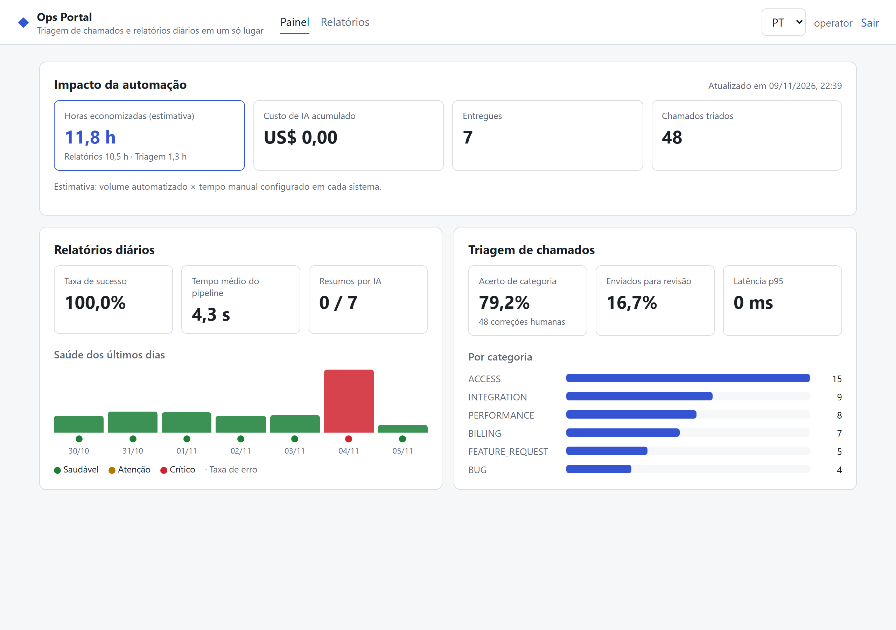

Portal interno · dashboard · CI/CD
Ops Portal
Junta a triagem de chamados e os relatórios diários numa tela só: horas economizadas, custo de IA, saúde da operação e acerto da triagem. Quem tem perfil de operador roda o relatório de um dia com um clique, e cada execução fica auditada.
- Backend Java 25 + Spring Boot 4 que guarda as chaves e agrega as duas APIs
- Se um sistema cai, o painel degrada em vez de quebrar
- CI sobe os três projetos com Docker, roda um relatório pelo portal e publica a demo
- Java 25
- Spring Boot
- Vue 3
- TypeScript
- PostgreSQL
- GitHub Actions